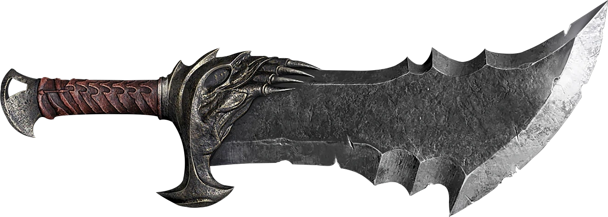

Profiel
Mijn profiel
Wie ben ik?
Ik ben Rick de Cuijper, ik ben 17 jaar en ik kom van de overkant ofterwijl terneuzen. Ik heb thuis 5 huisdieren namelijk: 1 oranje kat, 3 zwarte poesen en 1 puppy.
Ik woon nogsteeds bij mijn ouders en voordat ik naar de Hz kwam deed ik havo als mijn vooropleiding.
Het profiel dat ik gedaan heb ik natuur en techniek en ik heb al een beetje voorkennis omdat ik tijdens mijn havo ook de lessen informatica heb gevolgd.
Mijn favoriete muziek is:
- "Sterrenstof" van De Jeugd Van Tegenwoordig
- "Bye Bye Bye" van NSYNC
- "Treasure" van Bruno Mars
De Quote van de dag is: don't think hard, think smart.
Wat doe ik in mijn vrije tijd?
In mijn vrije tijd vind ik het leuk om te gamen.
Ik speel ook games zoals:
- Elden ring
- God of war: ragnarök
- Batman: arkham knight
- inFAMOUS Second Son
- Ghost of Tsushima

Mijn favoriete game is elden ring omdat het een uitgebeide soulsborne game is.
Ook werk ik bij de Aldi als bijbaan. Daar werk ik zaterdags altijd een paar uurtjes.
Sterke en zwakke punten
Ik heb ADD en dit zorgt ervoor dat ik snel afgelijd kan raken maar het kan er ook voor zorgen dat ik in een soort flow ga waardoor ik juist goed kan doorwerken aan dingen zoals projecten.
Ik zie goeie kansen om mezelf te beteren op de hz en het enige risico dat ik zie ik dat ik teveel dingen ga uitstellen en daarvoor moet ik oppassen.
